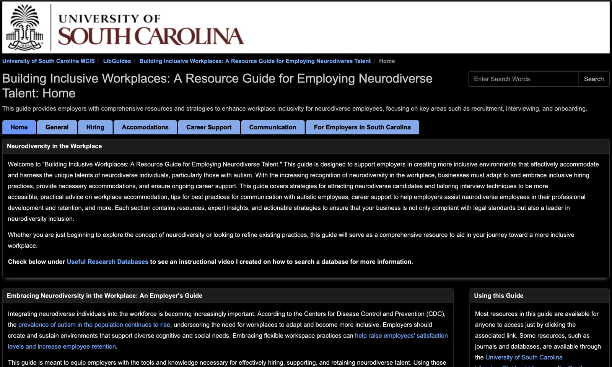

Provision of Information Services
Students will be able to perform effectively in the library and information professions by demonstrating competency in the provision of information services. By the conclusion of the master’s degree program, students should be able to:
-
design a variety of information services to meet the needs of diverse users, including onsite, remote, and underserved users
-
identify, evaluate, manage, and use information resources and sources effectively
-
apply critical-thinking, information-seeking, and problem-solving skills to analyze users’ inquiries and match them with appropriate and accessible resources
-
provide users with professional consultation during the information service encounter
-
apply up-to-date technology strategically to improve services and enhance access to information resources
-
adapt and apply learning theories and principles in the design and delivery of best practices to promote information literacy
Assignment

Click on the screenshot to the left of this text to view the assignment.
Description
For this assignment, I created a LibGuide titled Building Inclusive Workplaces: A Resource Guide for Employing Neurodiverse Talent. The guide was created for a realistic library scenario; it includes a variety of reference resources, and helps employers, a specific audience, find and use information on supporting neurodiverse employees in the workplace. I chose to build my guide around this topic after an interaction I had with a public library patron whose autistic grandson was struggling with underemployment. That conversation made me think more deeply about the role libraries can play in connecting people with practical, reliable, and empowering information. Instead of focusing the guide on autistic job-seekers themselves, I decided to create a resource for employers who want to better understand, hire, and support neurodiverse employees. My goal was to make the guide useful for people in positions to create more inclusive hiring practices and workplace environments.
Analysis
This LibGuide showed my ability to design an information service around a specific user need rather than simply gathering resources on a topic by including a range of resources, such as websites, reports, databases, and other reference materials related to neurodiverse employment. When selecting resources, I focused on materials that were credible, practical, and respectful in their representation of neurodiverse people. I wanted the guide to include information that employers could actually use, not just broad background information. I also tried to avoid sources that might reinforce stigma or present neurodiversity from a deficit-based perspective. I also had to think critically about what information an employer would actually need, including background knowledge, hiring guidance, workplace support strategies, and tools for improving accessibility. The organization and annotations in the guide served as a form of professional guidance, helping users understand not only what resources were available, but why they were useful and how they could be applied. The use of LibGuides and the embedded instructional video also allowed me to use technology to make the information more accessible to remote users and to support independent learning. Overall, the assignment gave me practice creating a user-centered information service that promoted access, inclusion, and informed decision-making.
Reflection
One of the more difficult parts of this assignment was figuring out how to organize the information in a way that would actually make sense to users. Finding resources was not the hardest part; the harder part was deciding how those resources should be grouped, labeled, and presented so that the guide felt useful instead of overwhelming. Because the topic of neurodiversity in the workplace can include so many different angles—employment barriers, inclusive hiring, workplace accommodations, employer education, disability advocacy, and practical toolkits—I had to think carefully about what belonged in the guide and what would distract from its purpose. Another challenge was making sure the resources reflected the values I wanted the guide to have; I made sure to select resources that are highly valued by the underserved community itself, not simply the first resources that appear when running a search. If I were doing this assignment again, I would want to get input from people who would actually use or be affected by the guide, such as employers of neurodiverse employees or neurodiverse job-seekers.